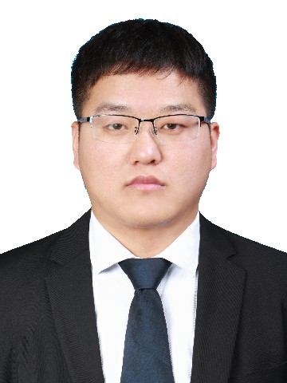

Active Teacher for Semi-Supervised Object Detection
IEEE/CVF Conference on Computer Vision and Pattern Recognition (CVPR), 2022
[pdf] [code]
|  |
Jianghang Lin 林将航Emails: hunterjlin007 AT gmail.com (best), hunterjlin007 AT stu.xmu.edu.cn[Goolge Scholar][GitHub ] [Curriculum Vitae] (Last updated on September 2022.) I received the B.S. Degree in Software Engineering of Fuzhou University in 2016. I was a research intern from February, 2022 to Augest, 2022 at Tecent Youtu Lab under the supervision of Dr. Yunhang Shen . |
My research interests are in Computer Vision, Multimodal and Machine Learning.
Recently, I focus on:
| |
Peng Mi, Jianghang Lin, Yiyi Zhou, Yunhang Shen, Gen Luo, Xiaoshuai Sun, Liujuan Cao✉, Rongrong Fu, Qiang Xu, Rongrong Ji
Active Teacher for Semi-Supervised Object Detection IEEE/CVF Conference on Computer Vision and Pattern Recognition (CVPR), 2022 [pdf] [code] |